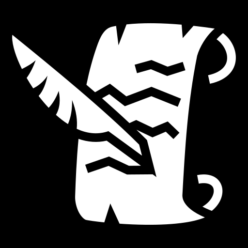

Charles Lesser
Hello! I'm an undergraduate studying Computer Science Game Design at UC Santa Cruz. I'm specializing in game design, and Unity based development. Currently, I am a research assistant at the Social Emotional Technology Lab where I prototype novel VR interfaces.
Projects

Ghili Suit (2024)
Made for the UCSC 2024 Computational Media Game Jam
Tavernkeep (2024)
Text-based Twine game originally made for college
The "Islands" Series
My tool for learning new systems - I create the next installment in this simple series when I want to learn a new system. It doubles as a joke and a project-based learning tool where I create the same game in different engines. It is also abandoned once I feel comfortable with the system, so most are unfinished.

Islands VR (2023)
Made in Unity, VR adaptation with photon multiplayer support
Islands 2 (2021)
Made in Unity, button-based survival game with graphics
Islands (2019)
Made in Java, text based survival game